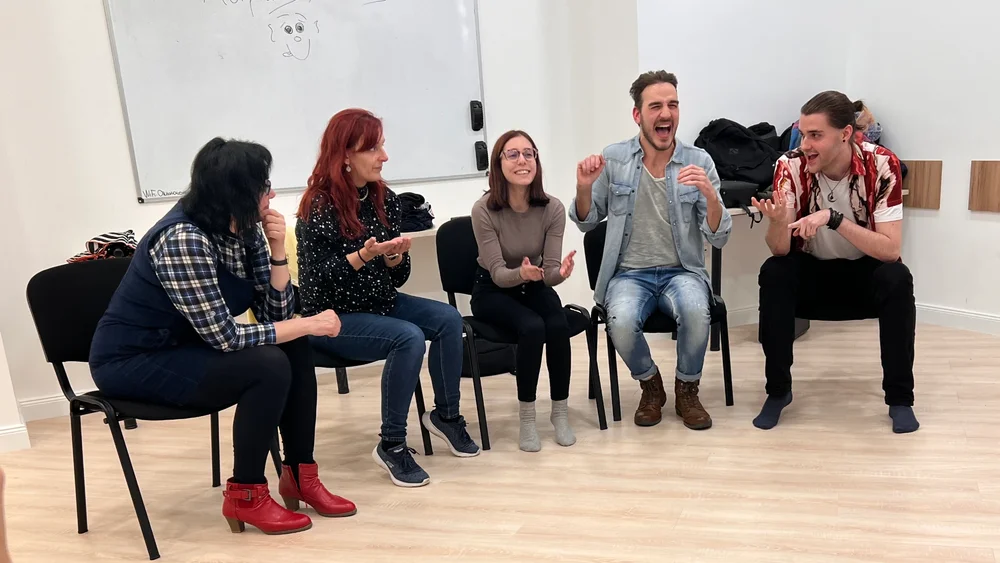
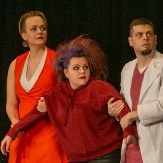
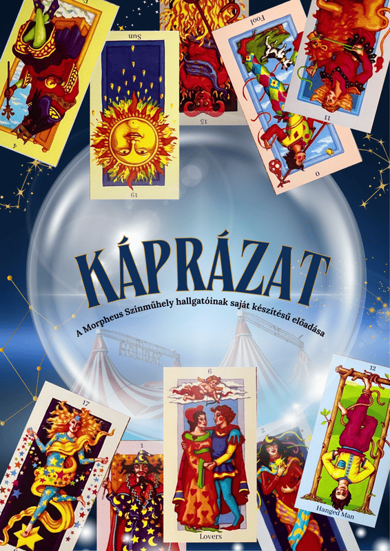
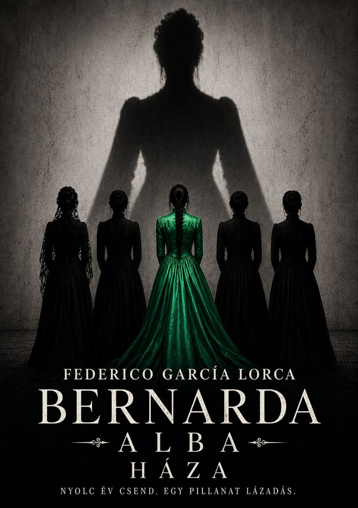
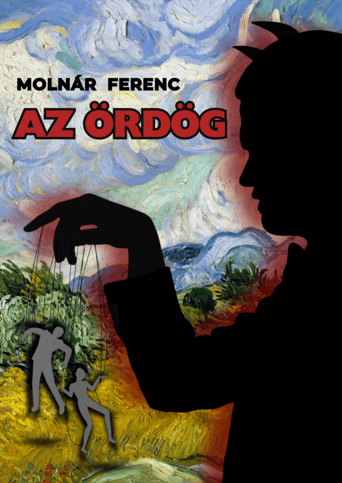
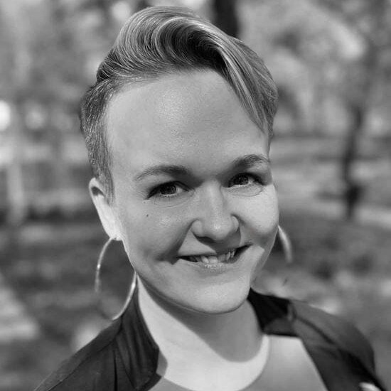
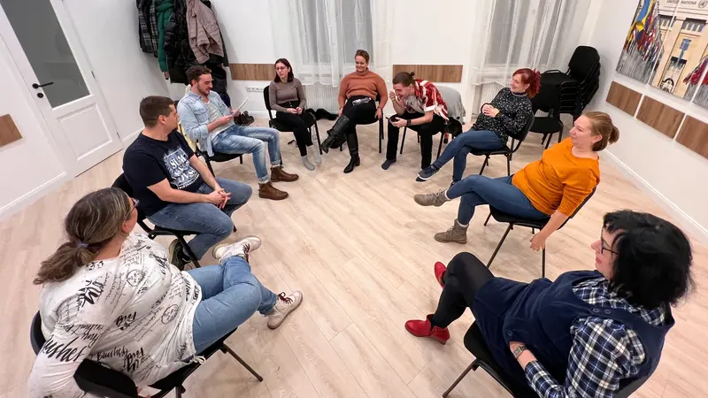

Kezdő kurzus
Improvizáció, karakterformálás, beszédtechnika, monológ-munka és színpadi mozgás — a végén vizsgaelőadással, igazi színházi körülmények között.
- Ritmus
- heti 1×2 óra
- Hossz
- 20 alkalom (+2)
- Díj
- 140 000 Ft-tól
Színházi képzéseinken nem csak a kiállásod fejlődik: részt vehetsz egy igazi színházi alkotófolyamatban, a ráhangoló játékoktól egészen a vizsgaelőadásig.


Érdekel a színház világa, és mindig is vágytál arra, hogy betekintést nyerj a színfalak mögé.
Ahol szabadjára engedheted a kreativitásodat, új dolgokat próbálhatsz ki, és egy csapat részeként valami értékeset alkotsz.
Ideges leszel, ha sok ember előtt kell beszélned, vagy zavar egy beszédhibád — és szeretnél magabiztosabb, határozottabb lenni.
Szívesen megismernéd az emberi lelket és működést színpadi példákon keresztül.
Improvizáció, karakterformálás, beszédtechnika, monológ-munka és színpadi mozgás — a végén vizsgaelőadással, igazi színházi körülmények között.
Azoknak, akik már jártak színházi képzésre, és folyamatosan tanulnának, fejlődnének. Felvételi meghallgatással.
Próbáld ki magad biztonságos közegben, hosszú elköteleződés nélkül. Előzetes online foglalással.
Színházi játékok és improvizáció csapatoknak. Workshopokat és táborokat is szervezünk.
Ráhangoló játékok, improvizáció, karakterformálás, színpadi beszéd és mozgás — nézz be egy alkalmunkra.
 További hangulatvideók a Facebookon
További hangulatvideók a Facebookon
Cetlik a próbaterem faláról: hallgatóink saját szavaival arról, mit jelent nekik a heti alkalom.




